Agenda
Three projects, one clear storyline
01 · Time Tracking
Cross-company engineering hours, from recording to SAP cost allocation.
September 2026
02 · Task Management
Personal backlog, kanban boards and team boards for every platform user.
October 2026
03 · Risk Management
IT/OT risks, measures, approvals and the IT Risk Board in one governed flow.
November 2026
At a glance
Three business needs, three solutions
Time Tracking
From recorded hour to SAP cost allocation
Employees record hours, project leads release them, controlling closes the month and posts to SAP — one guided, clickable end-to-end flow.
Task Management
Personal and team task boards
Boards, quick capture, a daily plan, due dates, team boards and notifications — full-stack product work on frontend and backend.
Risk Management
IT/OT risks in one governed process
Risks, measures, rule-based approvals and the IT Risk Board — designed contract-first and validated with a complete clickable prototype.
01
Time Tracking
From recorded hour to SAP cost allocation.
01 · Time Tracking · Objective
Why this application exists
The business problem
- EJOT companies do project work for each other across countries — these hours must be charged onward in SAP.
- Today hours are collected in Excel and transferred to SAP (KB21N) by hand.
- Colleagues without SAP access book through a shared user — no personal recording.
- No approval step by the project lead before hours are posted.
The objective
- One application for the whole chain: record → release → close the month → post to SAP.
- Hours only, never money — rates stay in SAP.
- Target: response rate ≥ 80 % before a month is closed.
01 · Time Tracking · Starting point & approach
From business process to working application
Starting point
- A clear business need and a fresh application shell on the platform.
- A process well known to the business, ready to be captured in one system.
My approach
- Understand — map roles, hand-overs and rules.
- Visualise — a clickable prototype for early feedback.
- Refine — improve usability and document the application.
- Harden — backend and permissions as the second phase.
01 · Time Tracking · The flow
Four roles, one chain — every hand-over is explicit
01 · Time Tracking · Delivery · Recorder
Dashboard — my month at a glance
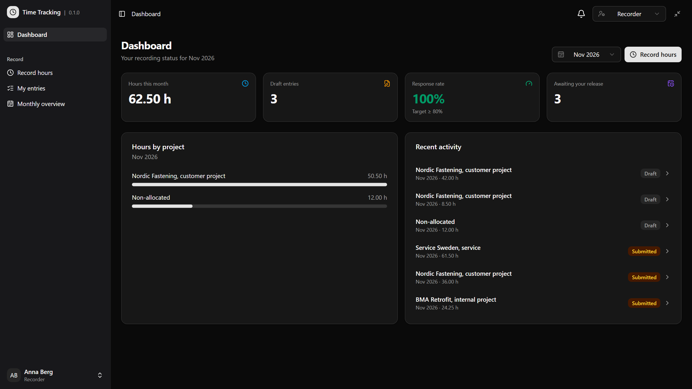
- Hours this month, open drafts, response rate against the 80 % target.
- Hours by project and recent activity with status.
- One click to “Record hours”.
- The role switcher at the top right changes navigation and landing page per role.
01 · Time Tracking · Delivery · Recorder
Recording — three ways to enter time
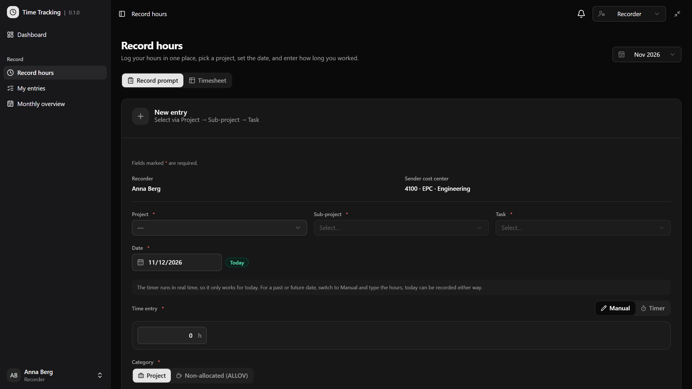
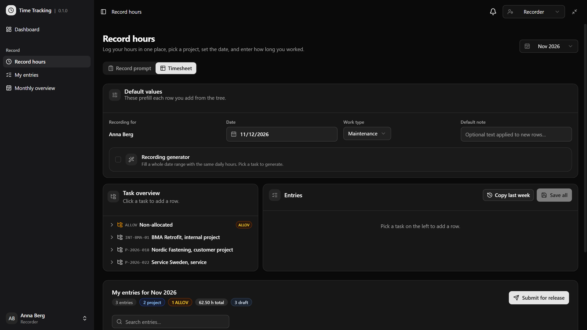
Own initiative Timesheet view, copy last week, duplicate row, recording generator, timer with “edit before saving”
01 · Time Tracking · Delivery · Recorder
My entries — gaps and mistakes become visible immediately

- Health banners: working days without an entry, implausible days (more than 24 h).
- Weekly grid against the 8 h daily target — click a day to record it.
- Filter by status, correct drafts, submit the month for release.
Own initiative
Weekly grid, health banners and calendar-click prefill were not requested — they prevent corrections at month end.
01 · Time Tracking · Delivery · Project lead
Team status and release

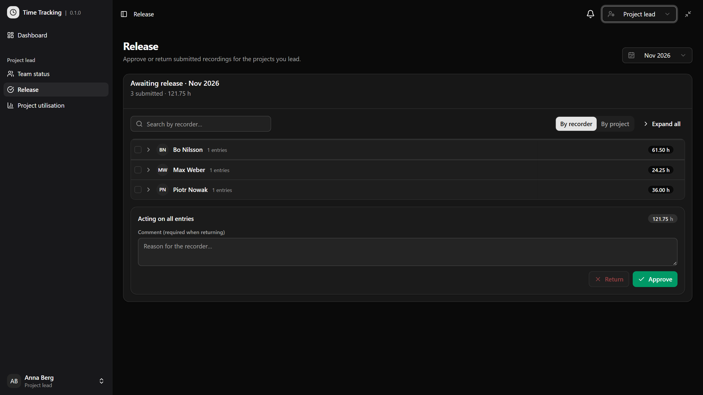
Own initiative Team status page, coverage strips, reminder nudges with notification bell, grouped & searchable release queue
01 · Time Tracking · Delivery · Project lead
Project utilisation — planned versus recorded effort

- Planned, recorded and remaining hours per project.
- Traffic-light status: on track, near limit (from 85 %), over budget.
- Hours still awaiting release are shown separately — they are not yet counted.
01 · Time Tracking · Delivery · CO central
Month-end close and SAP posting
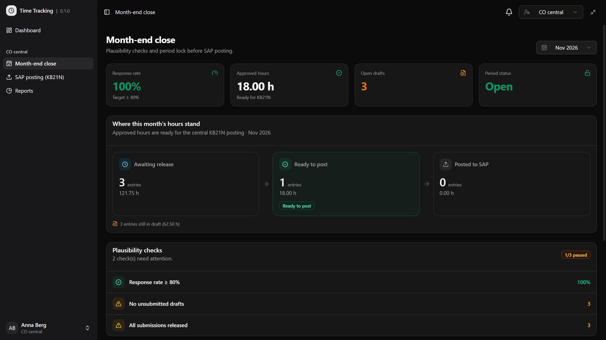
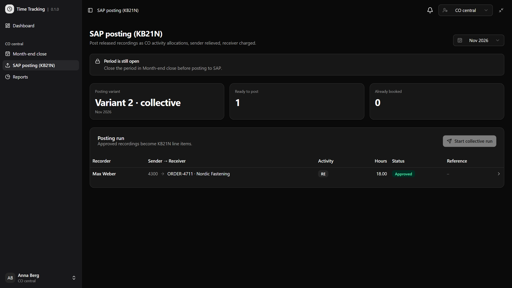
Prototype The posting run is simulated in the prototype; the real SAP interface is part of the backend phase.
01 · Time Tracking · Delivery · CO central & Administrator
Reports, distribution keys and permissions
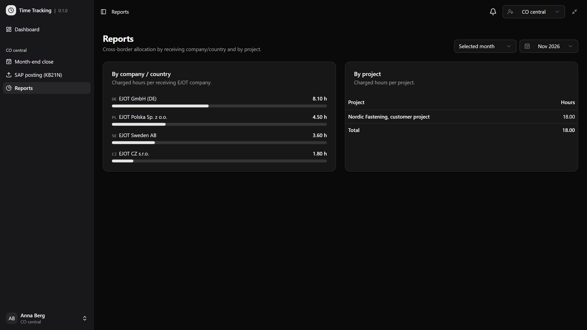
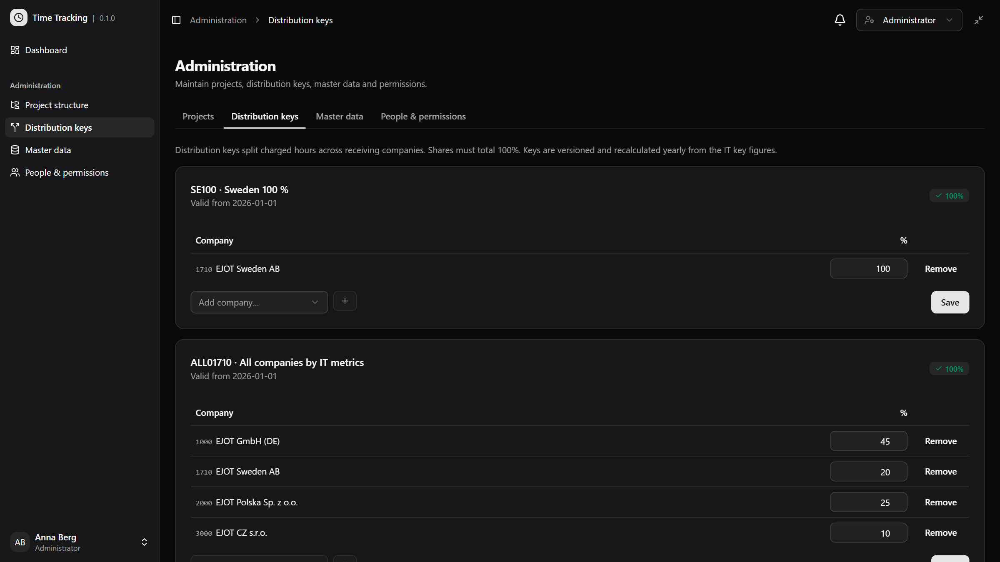

Also delivered: monthly overview with charts, project structure (project → sub-project → task) and SAP master data views.
01 · Time Tracking · Beyond the brief
What I added for a better user experience
01 · Time Tracking · Status & next steps
Where Time Tracking stands today
Delivered
- End-to-end flow for all four roles, available on the platform.
- Application Guide and Backend Integration guide.
Status
- Frontend complete — runs on sample data for validation.
- Backend implemented — API, service, database and permission model; merge is the next step.
- SAP posting simulated — interface to be agreed with CO.
Next steps
- Merge the backend and connect the screens to it.
- Agree the SAP interface (CSV / KB21N) with CO.
- Add automated tests.
02
Task Management
Personal backlog, kanban boards and a global view of your work.
02 · Task Management · Objective
One place for everyday work
The objective
- Every platform user gets one place for their work.
- A personal backlog, private kanban boards and shared team boards.
- Fast enough to replace sticky notes and spreadsheets — capture in seconds, plan the day, never miss a due date.
02 · Task Management · Approach
Small steps, shipped continuously
Progress
- Foundations: task notes, drag & drop with exact position, search, filters, favourites.
- Editing comfort: autosave with visible status, formatting toolbar and shortcuts, archive, per-column sorting, Due page, smart dates in English and German.
- Power features: recurring tasks, drag & drop attachments — then my own additions: quick capture, Today view, dashboard, bulk actions, reusable tags.
- Collaboration: team boards with members, activity log, assignment and due-today notifications.
02 · Task Management · Delivery
Boards — the daily working surface
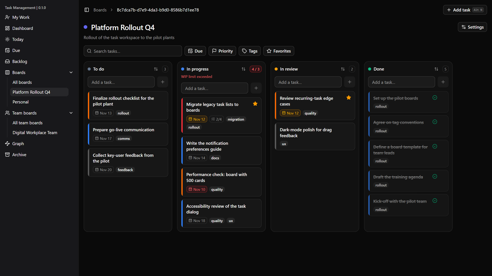
- Drag & drop lands exactly where you drop it.
- Search and filters by due date, priority, tags, favourites — moving cards still works while filtered.
- Per-column sorting with several keys, remembered per user.
- WIP limits: the column turns red when the limit is exceeded (here 4 / 3).
- Favourite stars, tag chips, overdue highlighting.
02 · Task Management · Delivery
The task — everything in one dialog
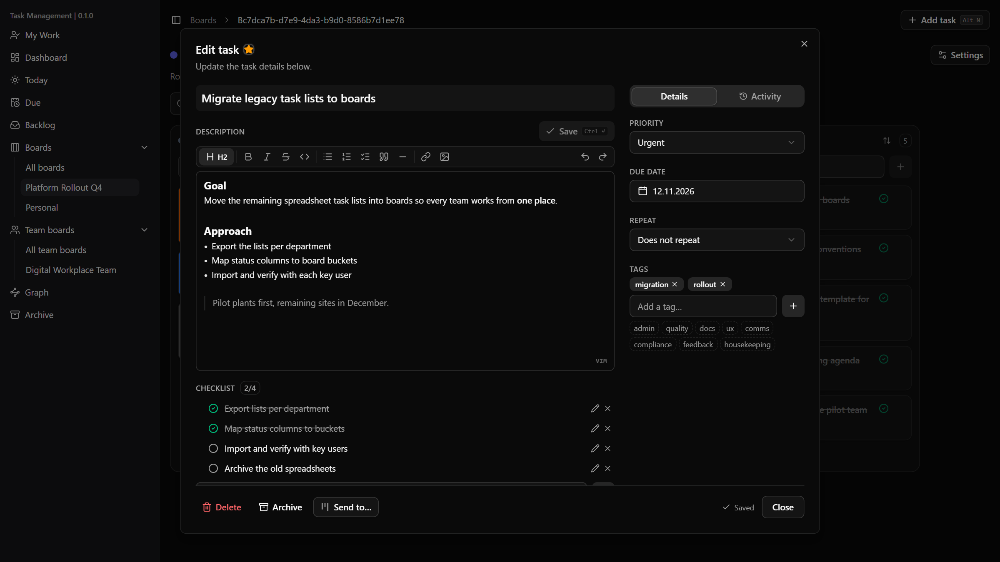
- Rich description with formatting toolbar and keyboard shortcuts — no markdown knowledge needed.
- Autosave with a visible “Saved” status; unsaved text is protected when closing.
- Checklist — editable and reorderable, with progress.
- Priority, due date, repeat, reusable tags.
- Notes, attachments by drag & drop (up to 25 MB), activity history.
02 · Task Management · Beyond the brief
Quick capture — a task in five seconds, from anywhere
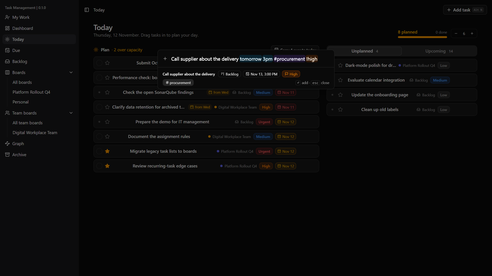
Own initiative
- Open with Alt + N on any page.
- Type naturally:
tomorrow 3pmbecomes the due date,#procurementa tag,!highthe priority,@Boardthe destination. - Recognised parts are highlighted while you type and shown as a preview.
- Dates are understood in English and German.
02 · Task Management · Beyond the brief
Today — plan the day realistically

Own initiative
- Drag tasks into today's plan from “Unplanned” and “Upcoming”.
- Capacity meter warns when the day is overbooked (“2 over capacity”).
- Carry over unfinished tasks from previous days in one click.
- Tasks from all boards and the backlog in one list.
02 · Task Management · Beyond the brief
Personal dashboard and bulk actions
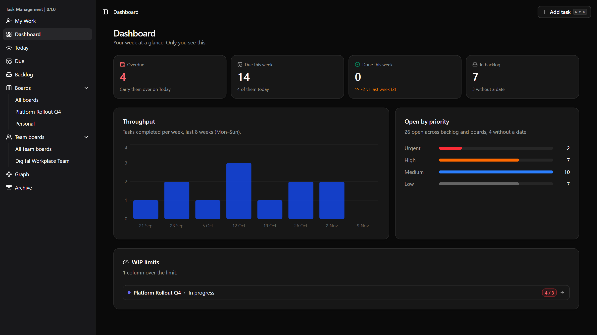

Own initiative Both delivered without a ticket, together with reusable tags, multi-select filters and Ctrl + Enter to save
02 · Task Management · Delivery
Never miss a date — never lose a task


Plus recurring tasks (daily, weekly, monthly, last day of month) and a due-today digest every morning at 07:00 — each user can opt out.
02 · Task Management · Delivery
Team boards — from personal tool to shared workspace

- Boards shared with named members; every member sees and edits all tasks.
- Assignees on cards, assignee filter, “My Work” lists what is assigned to me.
- Notification when a task is assigned to you.
- Activity log per task — who changed what, and when.
- Access is checked on the server: owner, assignee or team member — otherwise denied.
02 · Task Management · Requirement versus initiative
What was asked — and what I added
Requirement what was asked
- Task notes · search, filters, favourites
- Exact drag & drop positions
- Autosave with status, explicit description save
- Formatting toolbar and shortcuts
- Archive with its own page
- Multi-key column sorting, remembered
- Smart date recognition (EN / DE)
- Recurring tasks
- Drag & drop attachments
- Pinned task input, layout and assignment clean-up
Own initiative for a better experience
- Global quick capture with inline shortcuts
- Today planning view with capacity and carry-over
- Personal dashboard with throughput and WIP limits
- Bulk actions on the backlog
- Reusable tags and tag filter
- Editable, reorderable checklist
- Unsaved-changes guard, Ctrl + Enter to save
- Multi-select filters, moving cards while filtered
02 · Task Management · Delivered
What Task Management delivers today
Delivered
- Task notes with formatting toolbar and autosave.
- Search, filters, favourites and column sorting.
- Drag & drop for tasks and attachments.
- Smart date recognition, recurring tasks and archive.
- Quick capture, Today view and dashboard.
- Bulk actions, reusable tags and editable checklists.
- Team boards with members and activity log.
- Notifications for assignments and tasks due today.
03
Risk Management
IT/OT risks, measures, approvals and the IT Risk Board — one governed flow.
03 · Risk Management · Objective
From spreadsheets and e-mail approvals to one auditable process
Today's pain points
- Risks live in spreadsheets and slide decks.
- Approvals happen by e-mail — hard to trace.
- Approved measures are typed again into Demand Management.
- IT Risk Board meetings are prepared by hand.
- Audit evidence is collected ad hoc.
Drivers: ISO 31000, NIS2, GDPR Art. 32.
The target process
03 · Risk Management · Approach
Contract first — agree the “what” before building the “how”
Why this order
- The business can click through the whole process before a single line of backend exists.
- Frontend and backend share one agreed contract — no surprises later.
- When the backend is ready, the simulation is switched off — the screens stay.
Built for our group structure
- Multi-tenant from the start (e.g. IT and OT security).
- 12 business roles, 13 fine-grained capabilities.
- Configurable assessment model and approval rules — no code change needed.
03 · Risk Management · Delivery
IT Risk Dashboard — the management view

- Five key figures with trend against last quarter.
- Interactive 5 × 5 risk matrix — click a cell to see exactly those risks.
- Risks by category and status, measure status, top-10 risks.
- Filter by country and IT department.
- The “Prototype data” badge keeps it transparent that the data is simulated.
03 · Risk Management · Delivery
Risk register and guided risk creation
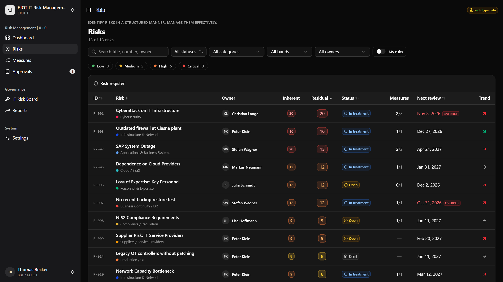

UX touch Live duplicate detection, summary rail that fills in as you go, shareable filter links
03 · Risk Management · Delivery
One risk — assessment, measures, approvals, history

- Three ratings at a glance: inherent → residual → target risk, positioned on the matrix.
- Existing controls and their effectiveness.
- Tabs for details, measures, approval process and complete history.
- “Next steps” panel tells the user what is expected of them.
- Comments with mentions; activity feed on the right.
03 · Risk Management · Delivery
Measures and rule-based approvals
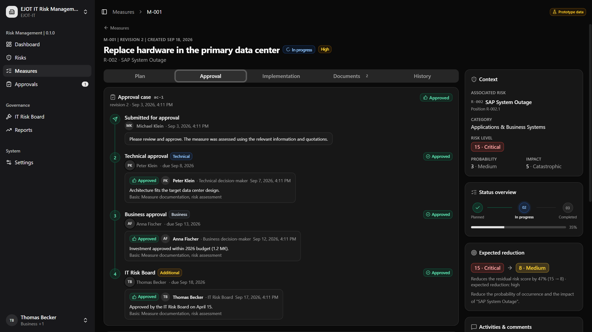
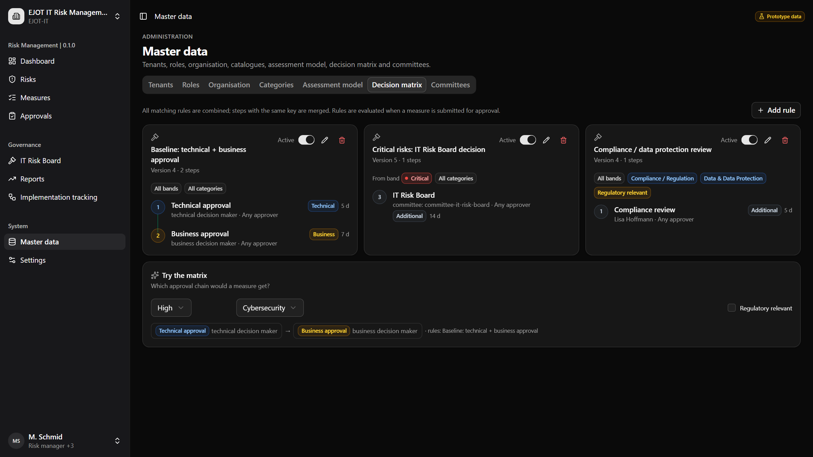
UX touch Approval-plan preview before submitting, decision-matrix simulator, personal approvals inbox grouped by urgency
03 · Risk Management · Delivery
Hand-over to Demand Management — no retyping

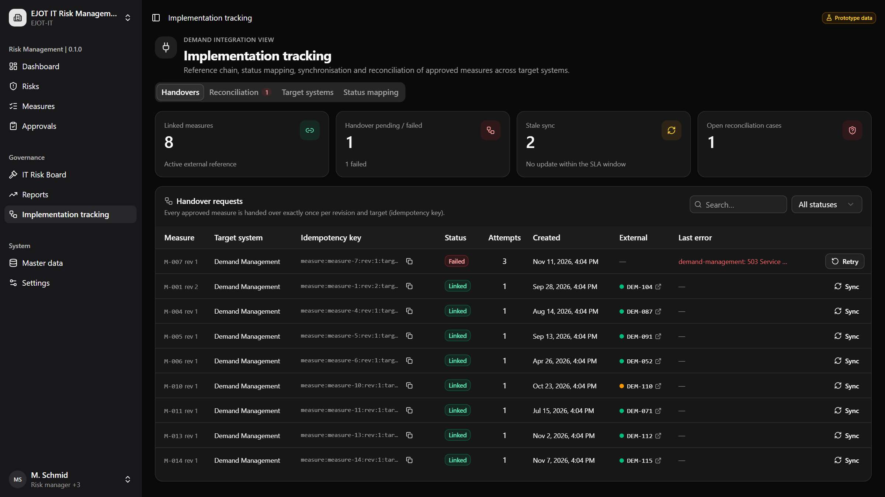
Each approved measure revision is handed over exactly once, status flows back automatically, and mismatches are raised as reconciliation cases instead of being silently lost.
03 · Risk Management · Delivery
IT Risk Board — meeting preparation without slide decks

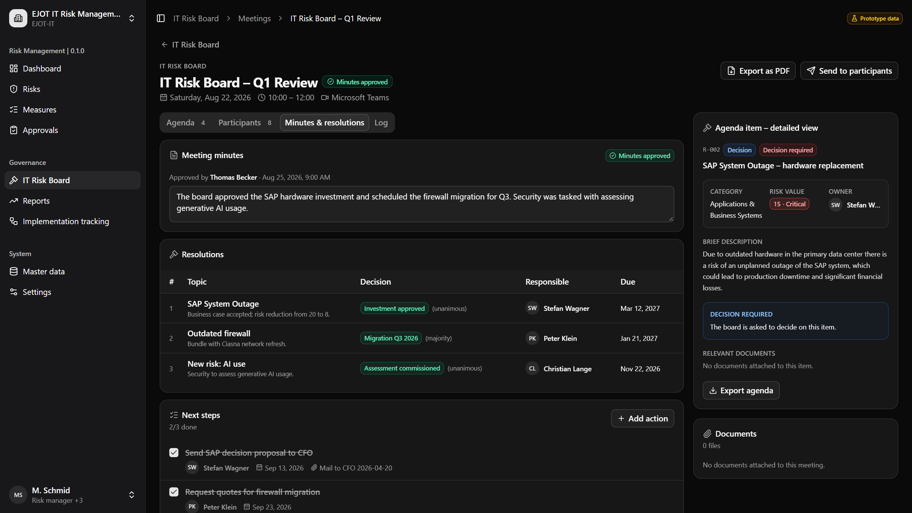
Top risks are proposed for the agenda automatically; decisions are recorded against the risk and appear in its history.
03 · Risk Management · Delivery
Reporting, audit and configuration


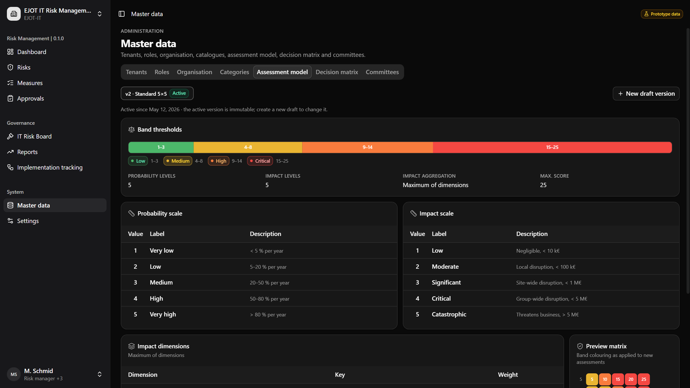
UX touch Demo persona switcher (14 personas) — stakeholders experience the application in their own role
03 · Risk Management · UX decisions
What I added for a better user experience
03 · Risk Management · Status & next steps
Where Risk Management stands today
Delivered
- Design documents: architecture, solution overview, delivery backlog.
- Complete API contract, reviewed and merged.
- Clickable prototype of the whole process with realistic sample data.
Status
- This is a prototype for validation — clearly labelled “Prototype data”.
- The backend service is a scaffold; exports, uploads and sending are simulated.
- English texts only so far; no automated tests yet.
Next steps
- Stakeholder walkthrough with the prototype → confirm scope.
- Backend in 4 increments (my plan: ≈ 4–5 months).
- German translation and test automation alongside.
App scaffold and CI pipeline were provided by the platform team.
Summary
Three projects, three different kinds of contribution
Time Tracking
Process → product
Translated a finance process with four roles into a complete, clickable flow — and wrote the documentation for it.
Task Management
Full-stack delivery
Delivered the requested features and my own ideas — across frontend and backend, in small reviewed steps.
Risk Management
Design ownership
Owned architecture, API contract and prototype for a governance-critical module from the first page.
Outlook
What I would like to take forward
Time Tracking
- Merge the backend and connect the screens
- Agree the SAP interface with CO
- Add automated tests
Task Management
- Release v0.2.0
- German user interface
- Feedback round with the first teams
Risk Management
- Stakeholder walkthrough of the prototype
- Backend increment 1
- Connect to Demand Management
What I need from you: feedback on priorities — and for Time Tracking and Risk Management a go-ahead for the next phase.